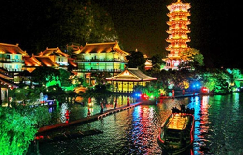
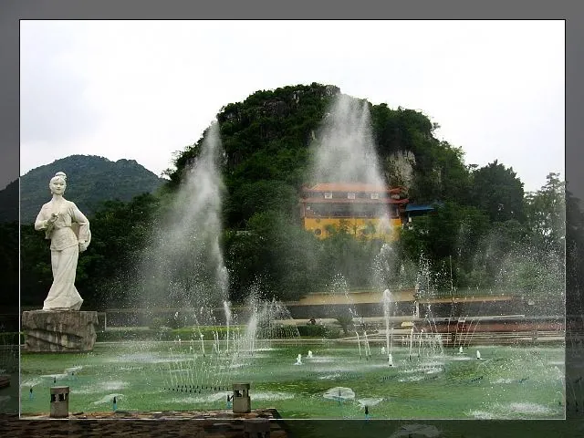
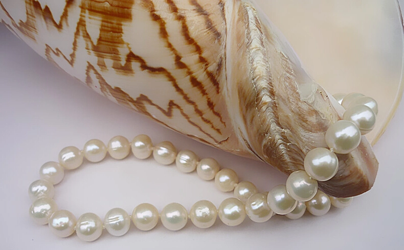

第二站：广西壮族自治区
基本信息

风景与美食
【自然奇观】桂林漓江漓江是广西山水之魂，83 公里水路如诗如画。喀斯特峰林倒映碧波，九马画山、黄布倒影等景点构成 “百里画廊”。乘竹筏穿行其间，可见渔翁与鸬鹚的传统捕鱼场景，仿佛置身水墨长卷。漓江的四季变幻更添魅力：春雾朦胧如纱，夏水碧绿似玉，秋枫点缀层林，冬云缭绕峰峦，每一帧都是大自然的杰作。【特色美食】柳州螺蛳粉以酸辣鲜香闻名，汤底用螺蛳与香料熬制，配以炸腐竹、酸笋、花生。独特的 “臭味” 与鲜味形成反差，成为 “舌尖上的广西符号”。2020 年入选国家级非物质文化遗产，年产值超百亿。柳州人将螺蛳粉从街头小吃发展为全球品牌，甚至衍生出速食包装，让世界品味广西的 “臭香传奇”。

人文与历史
【人文遗产】龙脊梯田壮族先民历经 700 年开垦的农耕奇迹，梯田从山脚盘旋至山顶，四季变幻如调色盘。红瑶族村寨点缀其间，吊脚楼与稻田相映，展现人与自然共生的智慧。春季灌水如镜，夏季绿浪翻滚，秋季金穗垂首，冬季雪覆银阶，梯田不仅是粮食的源泉，更是文化的活态博物馆。【历史名人】刘三姐壮族歌仙，传说中以山歌反抗压迫的传奇人物。电影《刘三姐》让她的歌声传遍世界，成为广西文化符号。如今 “三月三” 歌节仍以对歌形式纪念她。刘三姐的故事融合了壮族人民的智慧与浪漫，她的歌声穿越时空，至今回荡在八桂大地的山水之间。

物产
【物产产业】合浦南珠北海合浦自古产珠，有 “西珠不如东珠，东珠不如南珠” 的美誉。南珠圆润莹亮，曾为皇室贡品。现代珠贝养殖业年产值超 30 亿，带动沿海经济发展。合浦南珠不仅是珠宝，更是历史的见证 —— 从汉代海上丝绸之路的贸易品到现代高端饰品，它始终闪耀着广西的海洋之光。
